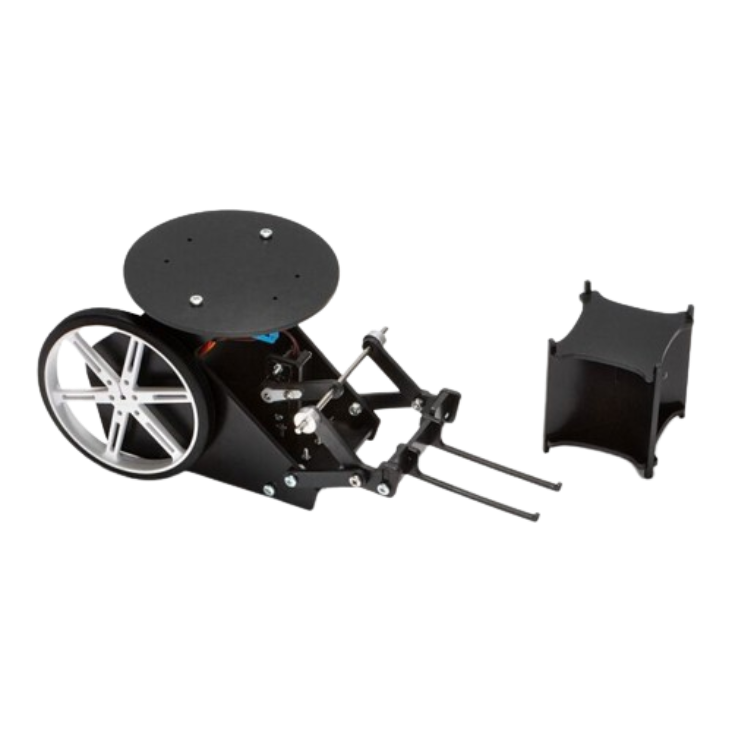

Arduino Forklift Rover
This rover was construced as apart of a kit. It uses an Arduno mini, Matlab and Simulink to control the rover's movements and forklift.
The rover is driven using two geared-DC motors and the forklift is controlled via a servo. The whole contraption is powered by a lithium-ion battery and can be controlled remotley from your laptop due to the Arduino mini's bluetooth capabillities.